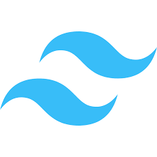

Olá! Meu nome é Matheus Lopes, tenho 19 anos e sou estudante do 5º semestre de Análise e Desenvolvimento de Sistemas no IFSP – Campus Bragança Paulista. Tenho grande interesse na área de desenvolvimento front-end, especialmente na criação de interfaces modernas, acessíveis e funcionais. Sou uma pessoa curiosa e apaixonada por aprendizado contínuo, sempre buscando aprimorar minhas habilidades e explorar novas tecnologias. Desde o início da faculdade, venho desenvolvendo projetos que fortalecem meu conhecimento em desenvolvimento web, me desafiando a crescer como profissional e criador.
Hard Skills
 HTML5
HTML5
 CSS3
CSS3
 JavaScript
JavaScript

TailwindCSS React
React
 Java
Java
 MySQL
MySQL
Projetos
O projeto Aquamarine é uma iniciativa dedicada à preservação da vida marinha e à conscientização ambiental. Por meio de um website informativo, a ONG divulga seus projetos de resgate e cuidado de animais marinhos, promove ações de limpeza e educação ecológica, e oferece um espaço para doações, fortalecendo o compromisso com a proteção dos oceanos e o equilíbrio dos ecossistemas aquáticos.

O Panela Velha é um projeto desenvolvido na disciplina de Desenvolvimento Web Front-End do curso de Análise e Desenvolvimento de Sistemas do IFSP. O site serve como um ponto de encontro para amantes da culinária, permitindo explorar, compartilhar e favoritar receitas. Os usuários podem criar contas, enviar receitas com detalhes como dificuldade, tempo e porções.
- View live
- View in Github

O TodoApp é um site que desenvolvi para aprimorar meus conhecimentos em Firebase. Nele, é possível adicionar e excluir notas, oferecendo uma interface simples e funcional para organizar tarefas e lembretes.